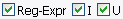

Kliknite na ne! Zvýraznená položka (ofarbená podľa systémovej témy) znamená, že je vybraná na premenovanie.
Záložka Zberač sa používa na výber súborov a adresárov na premenovanie.
Pre výber alebo zrušenie výberu položiek:
Kliknite na ne! Zvýraznená položka (ofarbená podľa systémovej témy)
znamená, že je vybraná na premenovanie.

Použite tlačítko Prehliadať pre zobrazenie dialógu výberu adresára.
Použite tlačítko OK, ak ste adresárovú cestu vložili alebo zadali.
Po výbere bude obsah adresára zobrazený.
Filtrovanie umožňuje v zadanom adresári pracovať iba s položkami, ktoré vás
zaújmajú, takže uľahčuje jednotlivý výber položiek na premenovanie.
Iba položky, ktoré obsahujú text zadaný do poľa Filter budú ukázané.
Pre vyhľadanie súborov daného typu použite '.', napríklad '.jpg'
zobrazí všetky obrázky typu jpeg.
!= (nerovná sa) je záporný modifikátor, inými slovami, ak je zaškrtnutý,
tak iba položky, ktoré sa nezhodujú s obsahom Filter budú ukázané.

Filtrovať sa taktiež dá použitím regulárnych výrazov.
Keď je zaškrtnutý Adresár, tak sú zobrazené podadresáre daného
vybraného adresára.
Keď je zaškrtnuté Súbory, tak sú zobrazené súbory v danom vybranom
adresáry.
Vybraním Priechod sa vyberú všetky súbory vo všetkých podadresároch
Takže vybraním koreňového adresára disku (napríkladC:\),
sa takto zobrazia všetky súbory na danom disku!
Ale adresáre sa nebudú dať premenovať.

Pre výber všetkých alebo žiadnych položiek na premenovanie
slúžia tlačítka všetko alebo nič.